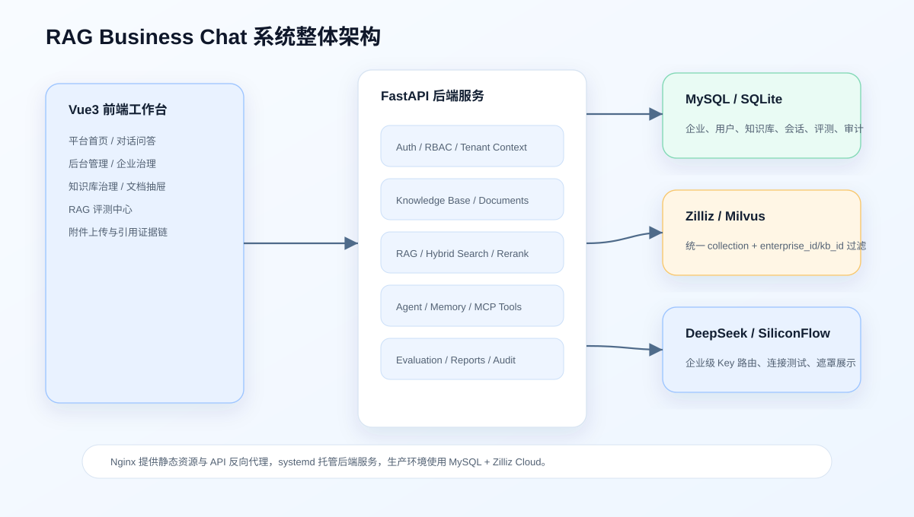
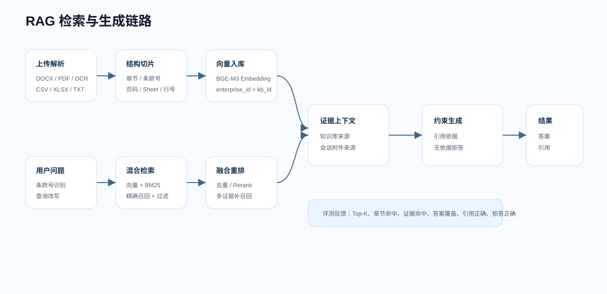
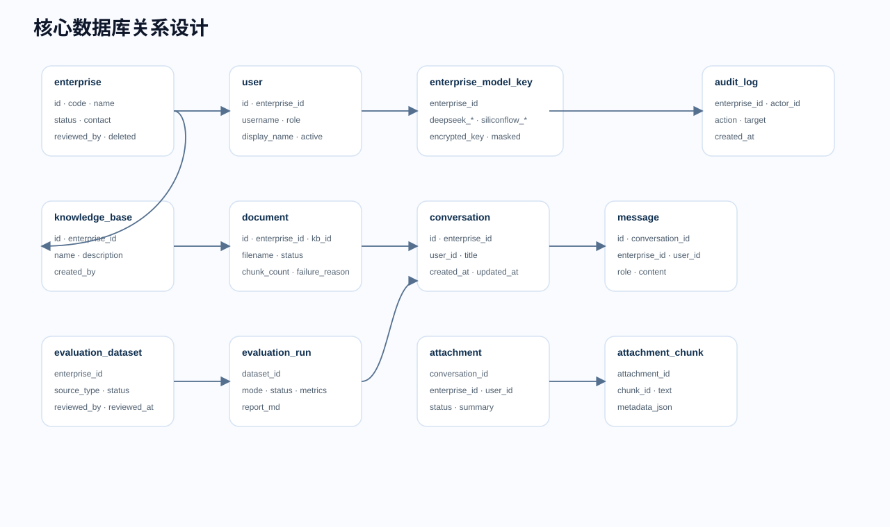
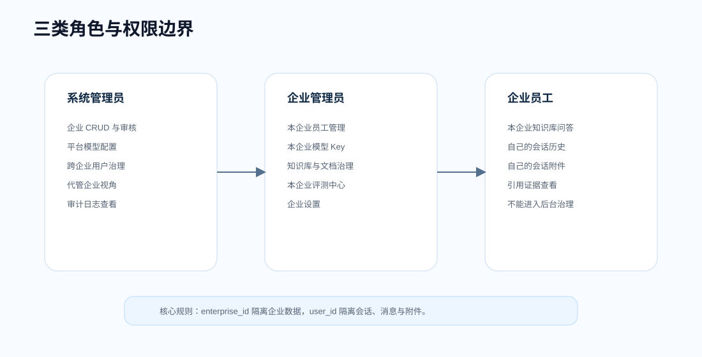
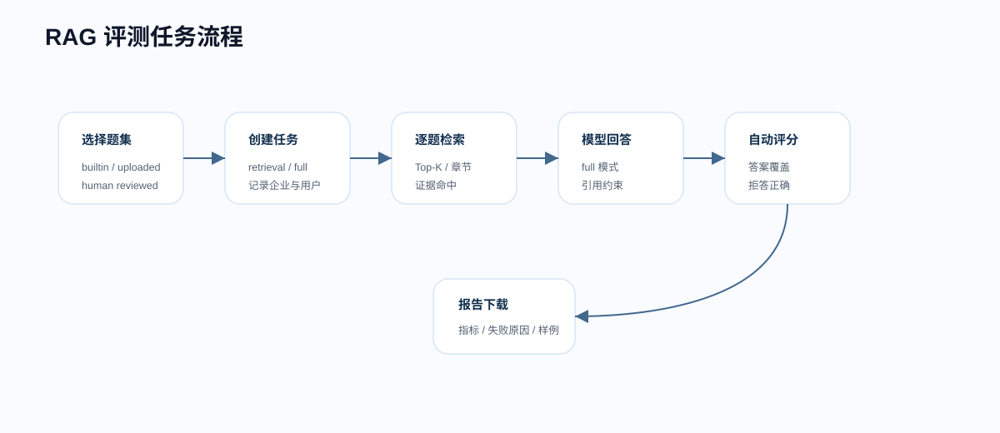

把企业资料变成可治理资产
知识库不是简单文件夹。系统会追踪文档解析状态、失败原因、切片数量和向量入库结果，让管理员知道资料是否真正可检索。
这是一个面向企业知识管理场景的 AI 工作台，覆盖多企业 SaaS、企业文档治理、可信 RAG 问答、会话附件理解、模型 Key 路由、权限隔离、审计日志和 RAG 评测中心。系统重点解决企业制度问答中“文档复杂、条款很短、表格难检索、跨文档易漏证据、权限必须隔离、效果需要量化”的实际问题。
知识库不是简单文件夹。系统会追踪文档解析状态、失败原因、切片数量和向量入库结果，让管理员知道资料是否真正可检索。
回答正文对应引用编号，来源区展示知识库、文件名、片段和相似度，便于用户判断答案是否来自正式制度。
评测中心通过题集、逐题诊断和报告下载，把 RAG 效果从主观体验变成可追踪指标。
前端使用 Vue3 + Element Plus + Vite，负责问答工作台、后台管理、评测中心和展示交互。后端使用 FastAPI + LangChain，负责认证鉴权、企业上下文、文档解析、RAG 检索、模型调用、评测任务和审计日志。关系库兼容 SQLite/MySQL，向量库使用 Zilliz/Milvus 统一 collection，并通过元数据过滤实现企业、知识库和文档边界。

CHUNK_SIZE=350、CHUNK_OVERLAP=80。
系统以 enterprise_id 作为企业级隔离边界，以 user_id 作为会话、消息和附件隔离边界。企业模型 Key 加密保存，页面仅展示配置状态和后四位；企业被禁用、拒绝或软删除后，其用户无法登录或调用业务接口。
| 数据域 | 核心表 | 设计重点 |
|---|---|---|
| 企业与用户 | enterprise、users、enterprise_model_key | 三类角色、企业状态流转、企业代码登录、模型 Key 加密。 |
| 知识库与文档 | knowledge_base、document | 企业内知识库唯一，文档解析状态和切片数可追踪。 |
| 会话与附件 | conversation、message、conversation_attachment、conversation_attachment_chunk | 按企业、账号、会话隔离；附件只作为当前会话临时 RAG。 |
| 评测与审计 | evaluation_dataset、evaluation_run、evaluation_case_result、audit_logs | 题集、任务、报告和治理日志按企业过滤。 |


评测中心支持 retrieval 和 full 两种模式。retrieval 用于验证检索命中、章节命中和证据召回；full 进一步调用模型生成答案，并评估答案要点覆盖、引用正确和拒答正确。
